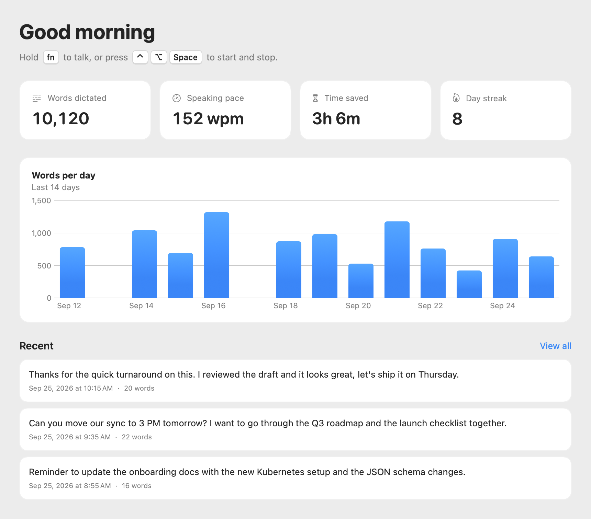

As fast as talking.
Because it is.
Most people speak three times faster than they type. Flowtype puts that speed into every text field on your Mac.
Hold the key
Hold Fn in any app: email, Slack, your code editor, a browser tab. A small bar at the bottom of the screen starts listening.
Say it naturally
Talk the way you would to a person. Punctuation and capitalization are handled for you.
Let go
Your words are typed where your cursor is, usually in about a second. What you had copied is put back on the clipboard.
Small app. Big difference.
Everything you need to write by voice, and nothing that gets in your way.
Works in every app
Flowtype types into the app you were using when you started talking: Mail, Slack, Notion, Chrome, VS Code, Terminal. If there's a text cursor, it works. It even adds a space when you continue a sentence.
Private by default
Speech is transcribed on your Mac with Apple's built-in speech model or Whisper. Audio is never saved to disk and never leaves your computer.
Your dictionary
Teach it names, product terms and acronyms. “Kubernetes”, “JSON” and your colleagues' names come out right every time.
Snippets
Say “my calendar link” and get your booking URL. Addresses, sign-offs and canned replies, one phrase away.
Careful with secrets
Flowtype won't dictate into password fields, and it puts back whatever you had copied after it pastes.
See your progress
Words dictated, speaking pace, time saved and your daily streak, plus a searchable history of everything you've said.
Pick your engine
On macOS 26 and later, Flowtype uses Apple's built-in speech model, so there's nothing to download. Prefer Whisper? Pick a model from fast to most accurate, or use your own Groq API key for cloud transcription. Flowtype keeps itself up to date automatically.
Feels like it came with your Mac.
A native Swift app with a Dock icon, a menu bar menu and a small bar at the bottom of your screen, and nothing else.



Your voice stays on your Mac.
No accounts, no analytics, no tracking. Flowtype is a tool, not a service.
- On-device transcriptionApple's speech model or Whisper runs locally. Audio is kept in memory only while you speak.
- History you controlKeep it, delete it after 24 hours, or don't save transcripts at all.
- Cloud only if you askGroq transcription is off unless you add your own key. Read the privacy policy.
Good to know
Is Flowtype free?
Yes, and it's open source under the MIT License. Download it from GitHub and use it as much as you like. On-device transcription is free and unlimited. Groq cloud transcription uses your own Groq account.
Which Macs does it run on?
Macs with Apple silicon (M1 or later) running macOS 14 Sonoma or newer. On macOS 26 and later, Flowtype uses Apple's built-in speech model, with nothing to download. On earlier versions it downloads a Whisper model once; the default Small model runs well on any M-series Mac.
Why does it need Accessibility permission?
To type into other apps, Flowtype places the text on the clipboard and presses ⌘V for you, and it listens for your push-to-talk key. macOS requires Accessibility permission for both. Flowtype doesn't read or record what you type.
Holding Fn opens the emoji picker. What do I do?
In System Settings → Keyboard, set “Press 🌐 key to” to Do Nothing. Or choose Right Option, Right Command or Right Control as your push-to-talk key in Flowtype's settings.
Which languages does it support?
English for now, following your Mac's region where it can (US, UK, Indian English and more). Dictation is tuned for English so your speech is never mistaken for another language.
How do updates work?
Flowtype checks for updates once a day and offers to install them. Every release is signed and notarized by Apple. You can also choose Check for Updates… from the menu.
Stop typing. Start talking.
Download Flowtype free and write your next email out loud. The code is open source, so you can see exactly what it does.